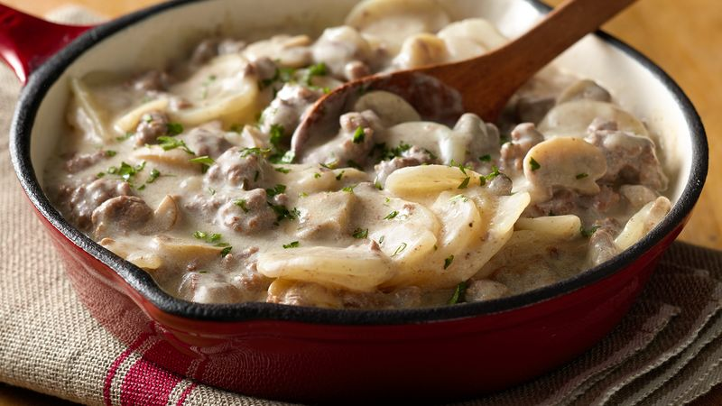

Odin Recipes

Description
Who can resist creamy stroganoff coupled with family-pleasing potatoes for a hearty dinner?
Ingredients
- 1 lb lean (at least 80%) ground beef
- 8 oz sliced fresh mushrooms
- 1 box (4.8 oz) Betty Crocker™ sour cream 'n chives potatoes
- 2 1/4 cups hot water
- 3 2/3 cup milk
- 1 tablespoon butter or margarine
- 1 tablespoon Dijon mustard
- 1/2 cup sour cream
- Chopped fresh parsley, if desired
Steps
- In 12-inch skillet, cook beef and mushrooms over medium heat, stirring occasionally, until beef is brown and mushrooms are tender; drain. Stir in Potatoes, Sauce Mix, hot water, milk, butter and mustard.
- Heat to boiling, stirring occasionally; reduce heat. Cover and simmer 20 to 25 minutes, stirring occasionally, until potatoes are tender.
- Stir in sour cream; heat just until hot. Let stand 5 minutes before serving (sauce will thicken as it stands). Sprinkle with chopped parsley.